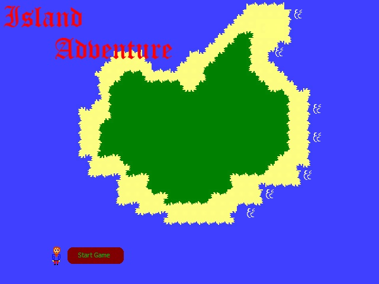
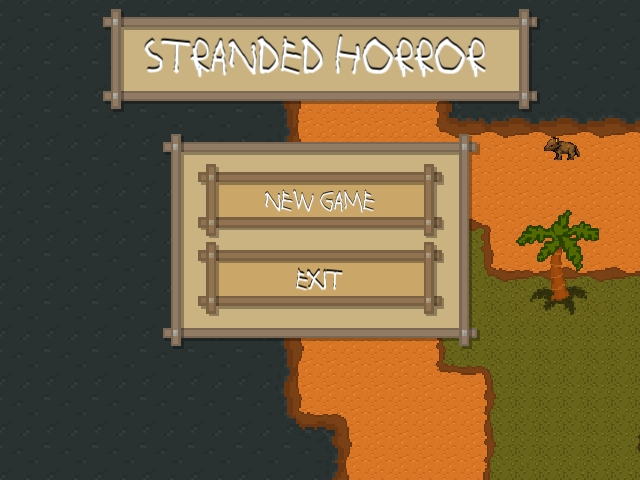

Here you will find all of the games created by users that submitted to our competitions.
Island Adventure
2017-10-16
(Click here to Download)
by Christo Meiring
Visit Website
"After your ship was plundered and sunk by pirates, you washed up on the beach of a deserted island.
Well, except for some pesky monkeys that keep throwing bananas at you.
You swiftly decide to start gathering resources to build a raft and get the hell off this island."
Stranded Horror
2017-10-16
(Click here to Download)
by GalactiCorpz
Visit Website
"Waking up after a ruthless battle at sea, you find yourself on the shores of an island. Probably part of the Lost Isles in the Mist.
You look around you and see no signs of friendly life as a pack of dire-wolves conquer this island as their own.
You quickly rush to find resources to get off the island."